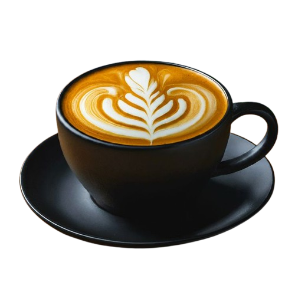

Kopi Basudara
Tempat ngopi paling asik di jakarta, kalian bisa menikmati kopi sambil beraktivitas atau bersantai sambil melihat indahnya pemandangan city light di jakarta

Tempat ngopi paling asik di jakarta, kalian bisa menikmati kopi sambil beraktivitas atau bersantai sambil melihat indahnya pemandangan city light di jakarta